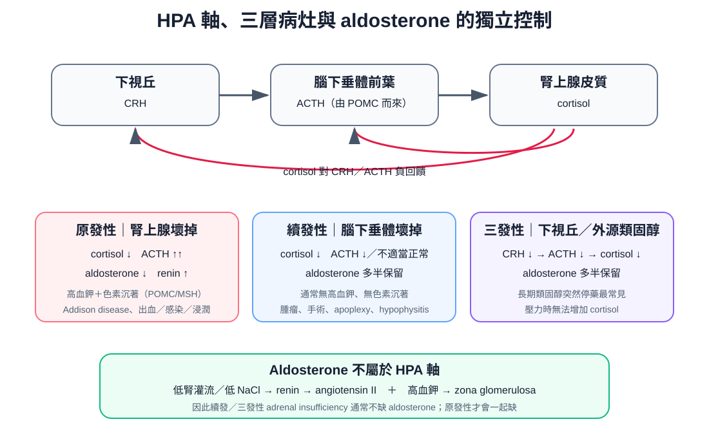
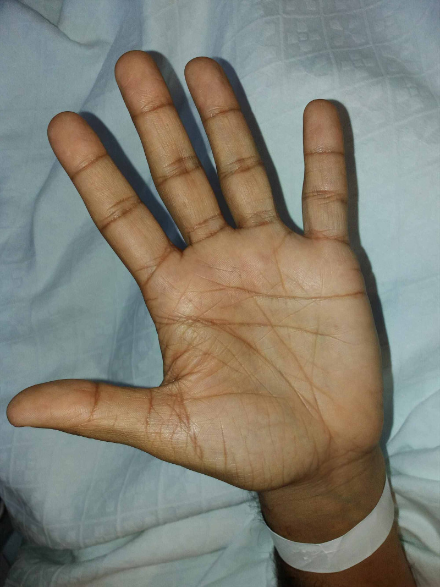
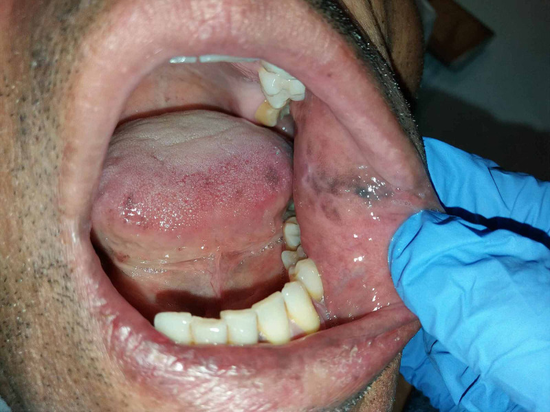

疾病 內分泌
Adrenal insufficiency ｜ 腎上腺功能不足 · 腎上腺危象 筆記更新 2026-07-28· 整理狀態：可用
加入閱讀清單 其他名稱 9 Adrenal insufficiency · 腎上腺功能不足 · Adrenal crisis · 腎上腺危象 · Addison disease · 愛迪生氏病 · Sheehan syndrome · 席漢氏症候群 · 續發性腎上腺功能不足
一句話總覽
一個荷爾蒙就把鑑別分成兩半——ACTH 高 ＝ 腺體自己壞（原發，Addison） ，皮質整層垮掉、aldosterone 一起不足 → 高血鉀、姿勢性低血壓、皮膚色素沉著 ；ACTH 低或「不適當地正常」＝ 上游腦下垂體／下視丘壞（續發／三發） ，aldosterone 由 RAAS 撐著仍正常 → 不會高血鉀、不會變黑 。低血鈉兩邊都有，不能拿來分兩者 。「下游壞則上游代償升高、上游壞則上下游一起低」這條方向性可原封不動搬到甲狀腺與性腺軸。急性期只有一條鐵律：懷疑 adrenal crisis 就先治療，不要等報告。
30 秒行動卡
想到它 ：低血壓對大量輸液與升壓劑都反應不良 ＋ 低血鈉 ＋（原發才有的）高血鉀。
做 ：抽一管 cortisol ＋ ACTH（給藥前唯一一次乾淨的診斷機會 ）→ 立刻 hydrocortisone 100 mg IV bolus → 200 mg／24 h 持續輸注（或 50 mg IV q6h）＋ 大量 0.9% NaCl → 同時找誘因（感染最常見 ）。「抽血」與「等結果」是兩件事。
長期 ：hydrocortisone 15–25 mg/day 分 2–3 次模擬生理節律、最大一劑在起床時 ；原發性才要加 fludrocortisone 。
原發 vs 續發／三發：全篇骨幹
項目
原發（Addison，腺體自己壞） 續發／三發（上游壞）
ACTH 高 （常 > 正常上限兩倍）低，或在低 cortisol 下「不適當地正常」
Aldosterone 低 ——皮質整層壞，球狀帶一起沒了正常 ——受 RAAS ＋ 血鉀驅動，不靠 ACTH
血鉀 高 （失去留鈉排鉀的能力）正常
血鈉
低 （失鹽 ＋ ADH 未被抑制，兩個機轉疊加）一樣會低 （只有 ADH 未被抑制這一個機轉）
姿勢性低血壓／鹽渴 明顯 （真實容積不足）少見或輕微
皮膚黏膜色素沉著 有 （ACTH 與同源 POMC 前驅物刺激黑色素細胞）沒有，甚至偏蒼白
其他垂體軸／長期治療
正常；hydrocortisone ＋ fludrocortisone
常合併 TSH／LH／FSH／GH／prolactin 一起不足；hydrocortisone 即可
病因與機制
flowchart TD
A["cortisol 不足"] --> B["血管對兒茶酚胺失去反應<br/>難治性低血壓、休克"]
A --> C["ADH 不再被抑制<br/>低血鈉"]
D["原發才有<br/>aldosterone 不足"] --> E["失鈉留鉀<br/>真實容積不足"]
E --> B
E --> C
E --> F["高血鉀、輕度代謝性酸中毒"]
classDef key fill:#263238,stroke:#000,color:#fff,font-weight:bold
class B key
筆記中的流程與關係

HPA 軸與三層病灶：原發性 adrenal insufficiency 的 ACTH 上升且 aldosterone 一起缺；續發／三發性的 ACTH 低，而 aldosterone 多半由 RAAS 與血鉀保留。自製示意圖。
輸液與升壓劑都拉不起來，本身就是診斷線索
血管平滑肌要對 catecholamine 起反應，需要 cortisol 的 permissive effect ；沒有 cortisol，打再多 norepinephrine 也踩不到油門。難治性低血壓 ＋ 找不到相稱的失血或感染灶 ，就該把危象放進前三名——這是給了 hydrocortisone 之後幾小時內看得到血壓回來 的少數情況之一。休克總分類與輸液通則見 Shock 。
臨床表現與診斷
慢性 ：倦怠、無力、食慾差、體重減輕、低血壓、姿勢性頭暈與鹽渴 、噁心嘔吐腹痛（可像急腹症）；原發獨有 的皮膚黏膜色素沉著（掌紋、關節伸側、疤痕、乳暈、頰黏膜與牙齦 ）。續發者反而常見無泌乳、無月經、其他垂體軸不足 。實驗室背景 ：低血鈉（最常見）、高血鉀（僅原發） 、輕度代謝性酸中毒、嗜酸性球與淋巴球增多 、正球性 Anemia 、低血糖、輕度高血鈣。「低血鈉 ＋ 高血鉀 ＋ 嗜酸性球高」湊在一起，立刻想到原發性。 危象的誘因 ：感染最常見（Pneumonia 、腸胃炎、泌尿道感染）、手術麻醉、外傷、心肌梗塞、病人自己漏吃或停掉類固醇 。危象病人多半早就知道自己有腎上腺不全——失誤不在診斷不出來，而在沒有及早加量。 發燒評估見 Fever ；急性期一管 Arterial blood gas 最快拿到鉀、鈉與酸鹼。
反直覺：長期類固醇造成的續發性，病人不會變瘦，反而是庫欣外觀
「倦怠 ＋ 體重減輕」是慢性原發性 的樣子。外源性類固醇造成的續發／三發，病人常是月亮臉、中心肥胖、體重不減反增 ——不能用「有沒有變瘦」來排除腎上腺不全 。同理，沒有色素沉著、沒有高血鉀，只能排除「原發」，不能排除腎上腺不全 。問病史時關節注射、吸入劑、外用藥、中草藥與來路不明的「消炎藥」都要問到，病人多半不覺得那是類固醇。
反直覺：續發性早期，cosyntropin test 可能「正常」——但病人真的不足
這個試驗測的是腎上腺對一劑超生理量 ACTH 的反應能力 ，不是腦下垂體的分泌能力。腦下垂體剛壞掉時（術後、卒中、外傷後數週內 ），腎上腺還沒萎縮，被大劑量 ACTH 一戳仍噴得出 cortisol → 偽陰性 。臨床高度懷疑而試驗正常時不能就此收工 ：6–8 週後重做 ，或改用低劑量 1 µg 試驗、insulin tolerance test。
同理，重症壓力下的單次 cortisol「落在正常範圍」也不代表足夠——該高而不高就是不足 。
分完上下游還要補的檢查，以及最會混淆的三個鑑別
檢查
什麼時候開
怎麼讀
血漿 ACTH（與 cortisol 同時抽） 一律
分上下游最關鍵的一步 ；需冰浴送檢，採檢條件不對會假性偏低
Renin、aldosterone
疑似原發
renin 高 ＋ aldosterone 低 ＝ 礦質皮質素也不足 → 需要 fludrocortisone
21-hydroxylase 自體抗體 已確認原發
陽性 → 自體免疫病因；陰性才往結核／出血／浸潤找
腎上腺 CT
原發且抗體陰性
雙側腫大或鈣化 → 結核、出血、轉移 ；萎縮 → 自體免疫
腦下垂體 MRI ＋ 其他垂體軸 （TSH／free T4、LH／FSH、prolactin、IGF-1）確認為續發
找腫瘤、hypophysitis、空蝶鞍；一次評估完所有軸
敗血性休克 ：兩者經常同時存在 （感染誘發危象）。升壓劑反應差 ＋ 低血鈉 ＋ 高血鉀 → 抽 cortisol 後直接給 hydrocortisone。SIADH↗ SIADH 容積正常且無低血壓 ；診斷 SIADH 前必須先排除腎上腺不全與甲狀腺低下。 Hypothyroidism↗ ／黏液水腫昏迷垂體功能低下的病人 TSH 不能用來評估甲狀腺功能 ，要看 free T4。另外要想到 Hypercalcemia （腎上腺不全是它的少見病因）、Delirium ，以及急腹症——危象的腹痛沒有相稱的影像發現 ，別在補類固醇前把病人推進開刀房。
掌紋色素加深 頰黏膜色素沉著


曬黑通常不會選擇性加深掌紋與口腔黏膜；這兩個「不該曬到的位置」是原發性 adrenal insufficiency 的高價值線索。Source: Mosca et al., Cureus 2021, Figures 1–2（PubMed ，CC BY 4.0）。
治療
反直覺且致命：先給類固醇，再給甲狀腺素——順序顛倒會誘發危象
甲狀腺素會加快 cortisol 的代謝清除 。在一個 cortisol 本來就不夠的病人身上先補 levothyroxine，等於把僅存的庫存加速燒掉 → 直接點燃 adrenal crisis。只要同時懷疑腎上腺不全與甲狀腺低下（Schmidt syndrome、全垂體功能低下、Sheehan），一律先補或至少同時補 glucocorticoid，再開始 levothyroxine。 同屬「先治療再確診」的還有 Thyroid storm 與黏液水腫昏迷。
Sick day rules：生病加倍、吐了改打針、手術比照危象、隨身注射套組與識別卡
① 生病加量 ：發燒或需要看醫師的感染 → 口服劑量加倍 （病得更重可到三倍），持續到康復後 24–48 小時 再回原劑量。
② 吃不下、吐、腹瀉 → 改注射 ：口服吸收不了時，hydrocortisone 100 mg IM 立刻打 ，然後就醫。
③ 手術與檢查要事先加量 ：小處置／小手術當日給到數十毫克即可；大手術或全身麻醉比照危象劑量 （100 mg IV 後 200 mg／24 h），術後幾天逐步減回。
④ 隨身兩樣東西 ：緊急 hydrocortisone 注射套組 （病人與家屬都要會打）＋ 識別卡或手環 。危象多半發生在家裡或送醫途中，第一劑打得早晚決定生死；懷疑時打下去不會有事，不打才會。
禁忌與相關連結
絕對不可
情境
絕對不可
為什麼
該做什麼
休克 ＋ 強烈懷疑 adrenal crisis
為了等 cortisol／ACTH／cosyntropin 結果才給類固醇 這些不是急檢，要數小時到隔天；未治療的危象會死人
抽完血立刻給 hydrocortisone 100 mg IV ，報告事後再看
診斷尚未確定但病人撐不住
先打 hydrocortisone 再送 cortisol
hydrocortisone 就是 cortisol，會被免疫分析測到 ，之後所有 cortisol 檢驗與 cosyntropin test 全部作廢
改用 dexamethasone 撐住，再補做 cosyntropin test
疑似或已知腎上腺不全 ＋ 甲狀腺低下
先給 levothyroxine
甲狀腺素加速 cortisol 代謝清除 → 直接誘發危象
先給／至少同時給 glucocorticoid ，再開始 levothyroxine
長期口服類固醇者
突然停藥 ，或生病、手術時照原劑量HPA 軸被抑制、腎上腺已萎縮，需求一上升就完全跟不上
緩慢減量 ；生病／手術一律加量或改注射 （sick day rules）
原發性腎上腺不全的長期替代
只給 hydrocortisone、不給 fludrocortisone
aldosterone 缺失沒補上 → 持續失鹽、姿勢性低血壓、高血鉀
加 fludrocortisone 0.05–0.2 mg/day ，依血壓、姿勢性變化、鉀、renin 調
腎上腺不全 ＋ 嚴重低血鈉
補了類固醇後放著血鈉自己往上衝
cortisol 一補、ADH 立刻被抑制 → 大量排自由水 → 血鈉矯正過快
限制每日上升幅度、密集追鈉與尿量；衝過頭時以 5% 葡萄糖水（±desmopressin）回拉